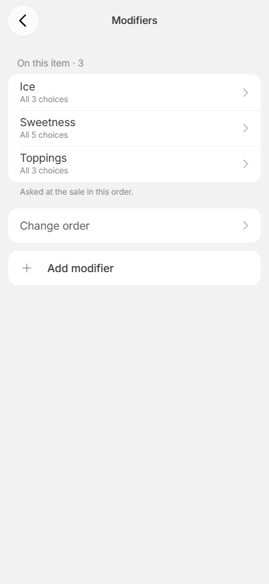

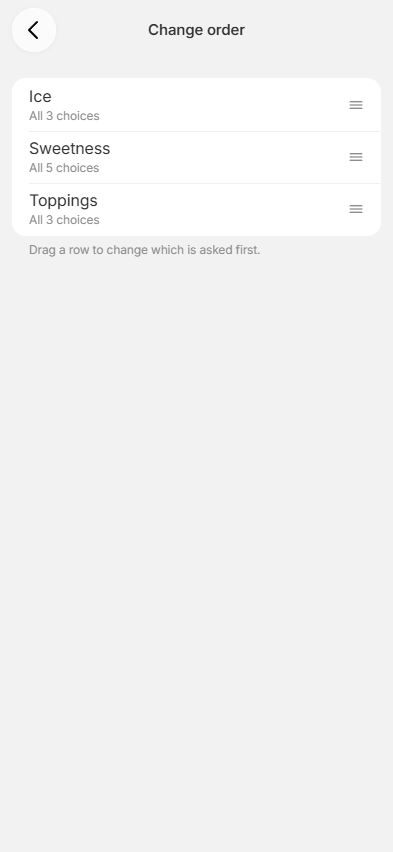
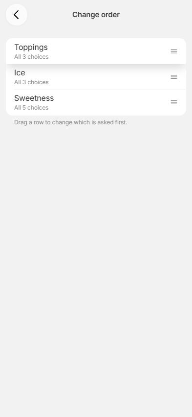


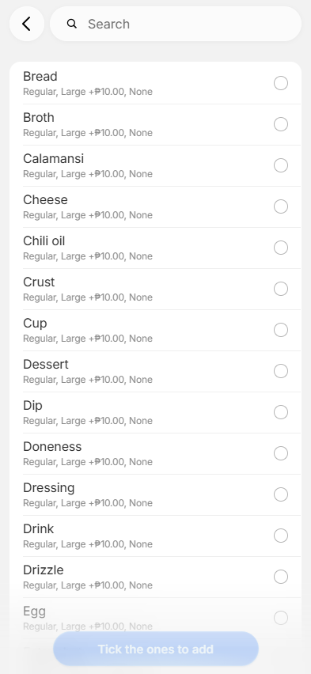

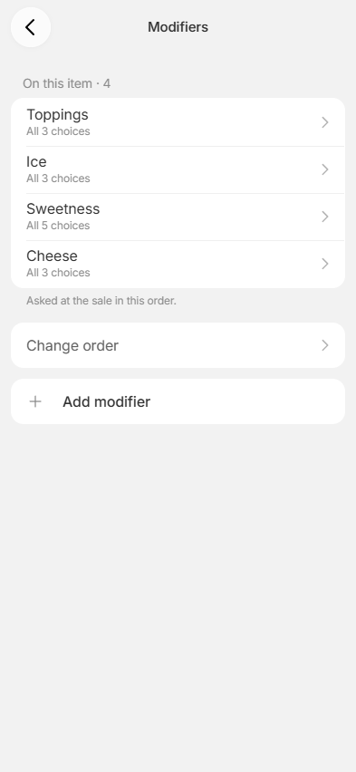
L and 4 easier takes. Same jobs: open, change order, add, remove. The item's Save keeps everything. Lab: /mods-page-lab/?mv=l, s, t, u, v.
Change order and Add are their own pages, with only Back.





Same as L. Change order ends with a blue Done where Save sits.


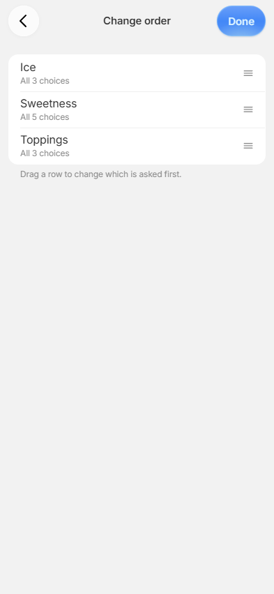


S, but Change order moves with ↑ ↓. Nothing hidden to learn.


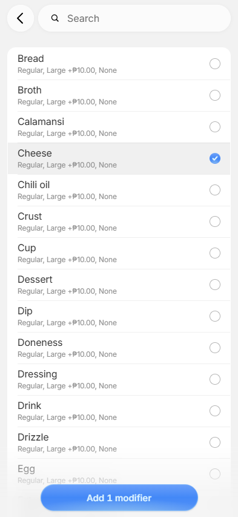

S, but tapping a modifier on Add adds it and goes straight back.


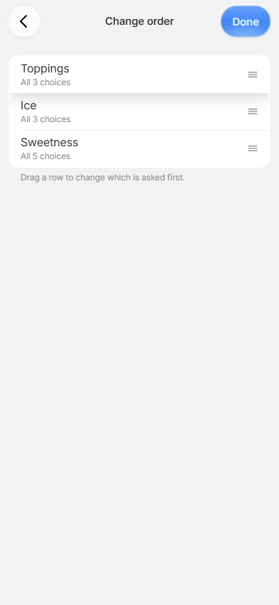
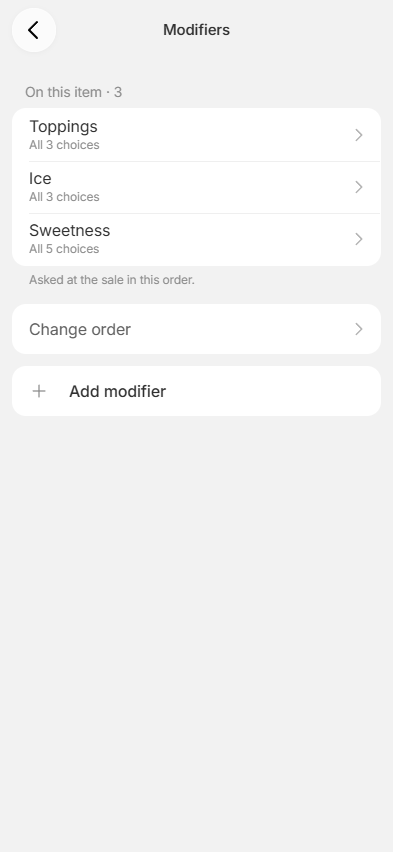


Add modifier and Change order sit together in one card. Arrows to order, one tap to add.
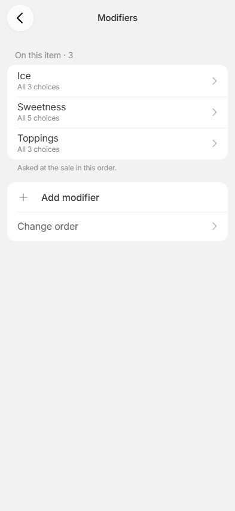
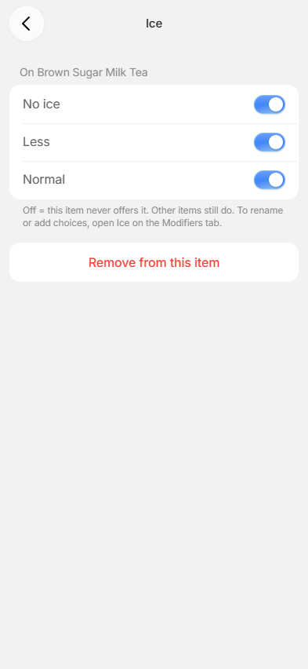
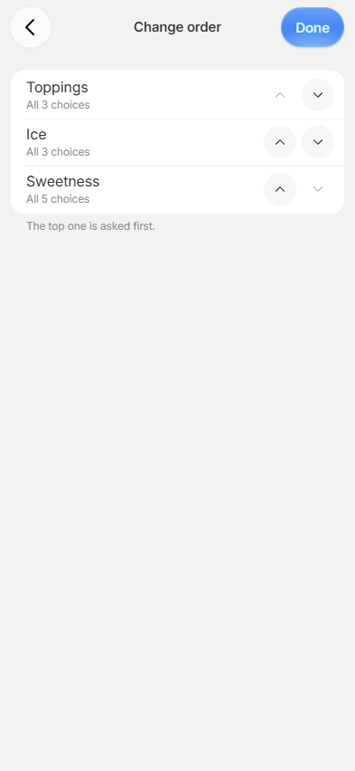
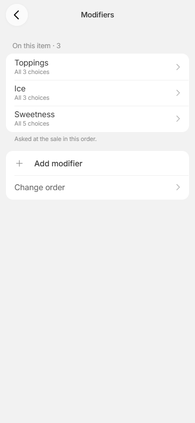
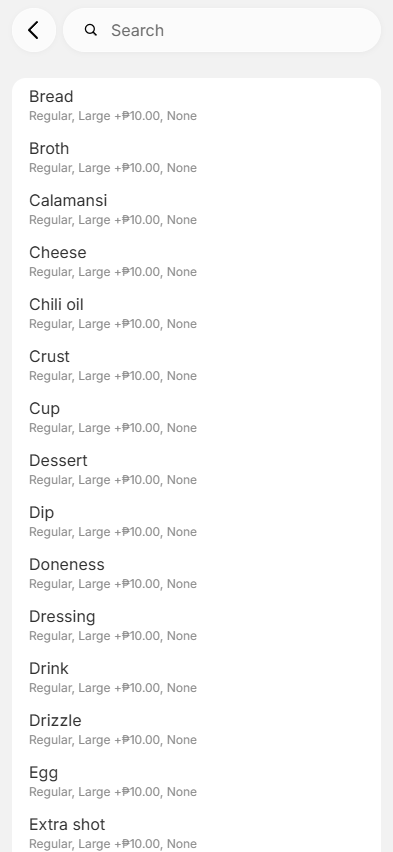
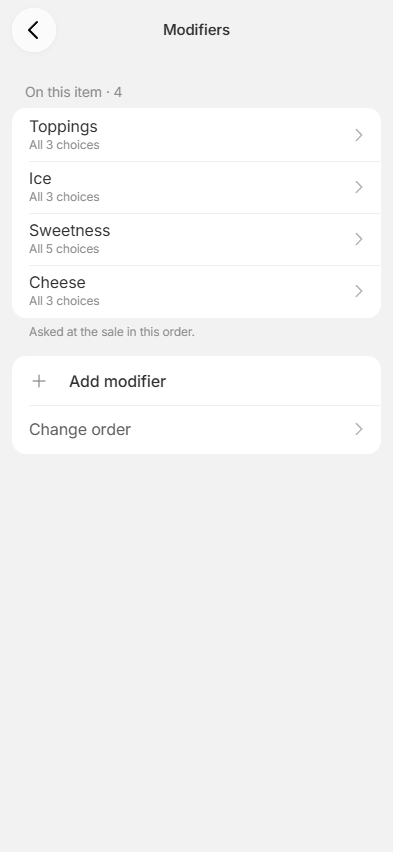
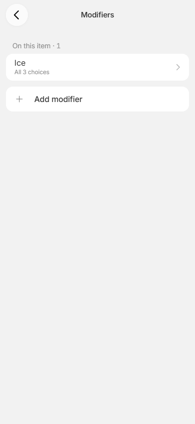
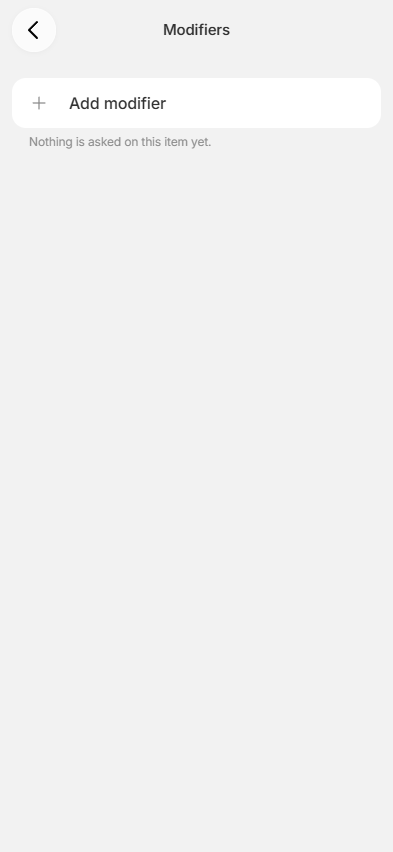